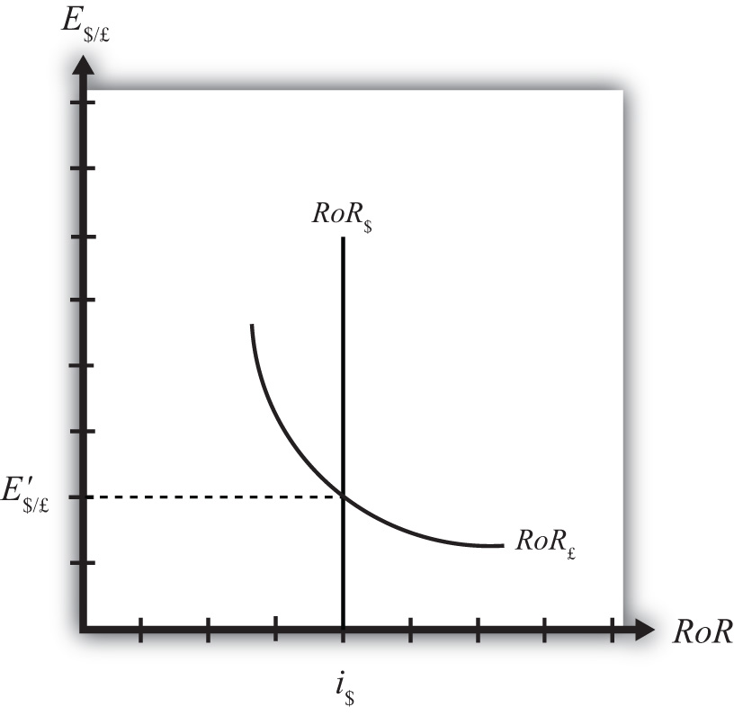

An alternative graphical approach is sometimes used to depict the equilibrium exchange rate in the foreign exchange (Forex) market. The graph is called the rate of return diagram since it depicts rates of return for assets in two separate countries as functions of the exchange rate. The equilibrium condition depicted in the diagram represents the interest rate parity condition. In effect, the diagram identifies the equilibrium exchange rate that must prevail to satisfy the interest rate parity condition.
Recall the rate of return formulas for deposits in two separate countries. Consider an investor, holding U.S. dollars, comparing the purchase of a one-year certificate of deposit (CD) at a U.S. bank with a one-year CD issued by a British bank. The rate of return on the U.S. deposit works out simply to be the U.S. interest rate shown below:
RoR$ = i$.The rate of return on the British asset, however, is a more complicated formula that depends on the British interest rate (i£), the spot exchange rate (E$/£), and the expected exchange rate (E$/£e). In its simplest form it is written as follows:
In Figure 16.5 "Rate of Return Diagram", we plot both RoR equations with respect to the exchange rate (E$/£). Since RoR$ is not a function (i.e., not dependent) on the exchange rate, it is drawn as a vertical line at the level of the U.S. interest rate (i$). This simply means that as the exchange rate rises or falls, the RoR$ always remains immutably fixed at the U.S. interest rate.
Figure 16.5 Rate of Return Diagram
The RoR£, however, is a function of the exchange rate. Indeed, the relationship is negative since E$/£ is in the denominator of the equation. This means that as E$/£ rises, RoR£ falls, and vice versa.
The intuition behind this negative relationship is obtained by looking at the alternative (equivalent) formula for RoR£:
Recall that the exchange rate ratio represents the expected percentage change in the value of the pound. Suppose, as an example, that this term were positive. That would mean the investor believes the pound will appreciate during the term of the investment. Furthermore, since it is an expected appreciation of the pound, it will add to the total rate of return on the British investment. Next, suppose the spot exchange rate (E$/£) rises today. Assuming ceteris paribus, as we always do in these exercises, the expected exchange rate remains fixed. That will mean the numerator of the exchange rate expression will fall in value, as will the value of the entire expression. The interpretation of this change is that the investor’s expected appreciation of the pound falls, which in turn lowers the overall rate of return. Hence, we get the negative relationship between the $/£ exchange rate and RoR£.
The intersection of the two RoR curves in the diagram identifies the unique exchange rate E′$/£ that equalizes rates of return between the two countries. This exchange rate is in equilibrium because any deviations away from interest rate parity (IRP) will motivate changes in investor behavior and force the exchange back to the level necessary to achieve IRP. The equilibrium adjustment story is next.
Jeopardy Questions. As in the popular television game show, you are given an answer to a question and you must respond with the question. For example, if the answer is “a tax on imports,” then the correct question is “What is a tariff?”